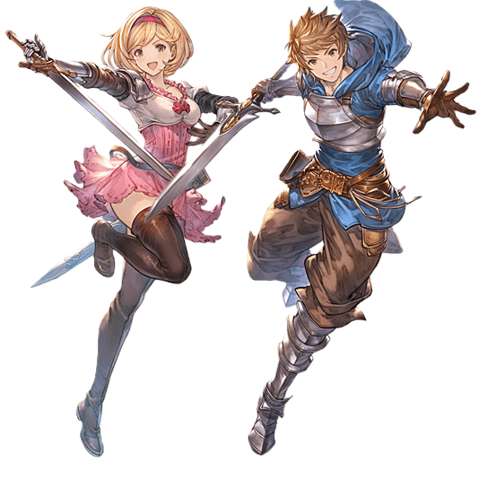
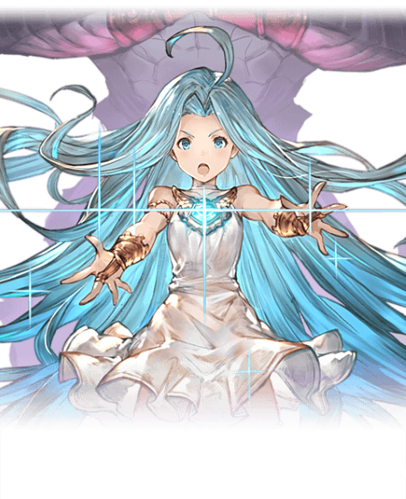
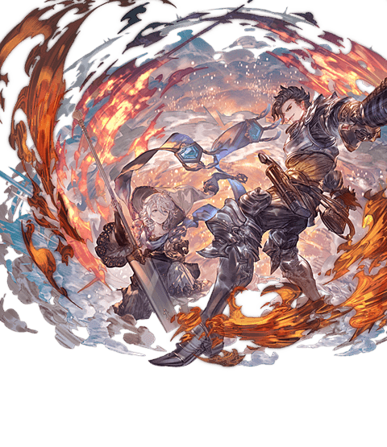
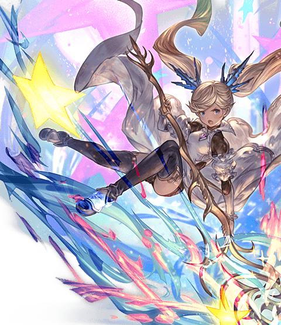
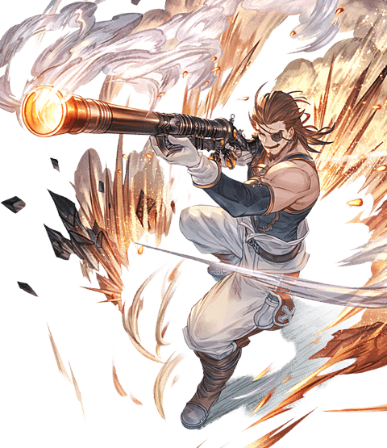
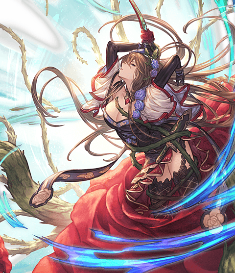

Characters
主人公(CV:金元寿子,小野友樹)
蒼を駆る新鋭
年齢:15歳
身長:170cm(グラン) 156cm(ジータ)
種族:ヒューマン
"閉ざされた島"ザンクティンゼルで相棒のビィと共に暮らしていた少年(少女)。
父親からの手紙に記された《星の島イスタルシア》を目指し修業に明け暮れていたが、エルステ帝国に追われる少女ルリアとの出会いを期に旅立つ。
一度は命を落とすが、ルリアと魂を共有する
「生命の共有《リンク》」を行うことで生き延びた。
その後「空の果て」イスタルシアを目指し、かつルリアを守るため、騎空団を立ち上げる。
正義感が強く、困っている人は放って置けないお人よしな性格。
時に突拍子もない発言で仲間を困惑させて楽しむいたずらっぽい一面もあるが、一癖も二癖ありすぎな団員たちをまとめる良きリーダーである。
それぞれデフォルトネームであるグラン(男)、ジータ(女)が呼称として定着した。
ルリア(CV:東山奈央)
蒼の少女
年齢:不明
身長:152cm
種族:ヒューマン
趣味:お歌、さんぽ
好き:カタリナと主人公
苦手:お化け
《星晶獣》を従える謎多き少女。
自らの過去の記憶を持たず、その能力ゆえに《エルステ帝国》に囚われていたところを、護衛の騎士であるカタリナと共に脱走する。
《星の民》の遺産である《星晶獣》を従え、命の危機に瀕した主人公と魂を共有することでその傷を癒すなど、不思議な力を秘めている。
外の世界を知らず、多くの事に興味を示す好奇心旺盛な女の子。
ビィ(CV:釘宮理恵)
導きの赤き竜
年齢:不明
身長:42cm(座ると37cm)
種族:不明
趣味:ひなたぼっこ
好き:リンゴ
苦手:乱暴な子供
主人公の運命を導く、羽の生えたトカゲのような謎の生物。
リンゴが大好物。
かわいい、小動物、トカゲなどと言われることが嫌い。
カタリナ(CV:沢城みゆき)
蒼の守護者
年齢:24歳
身長:169cm
種族:ヒューマン
趣味:刀剣収集
好き:可愛いもの、小動物
苦手:虫、料理
ルリアを守るために《エルステ帝国》に背いた女騎士。
かつては帝国の忠実な騎士としてルリアの護衛を務める騎士だったが、帝国の謀略からルリアを守るため、主人公とともに進むことを決意する。
愛剣「ルカ・ルサ」を巧みに操り、冷静で理知的な振る舞いは、とても頼りになる一方で、方向音痴や料理下手を仲間に指摘される一面も。
ラカム(CV:平田広明)
蒼穹の案内人
年齢:29歳
身長:181cm
種族:ヒューマン
趣味:ダーツ、銃の手入れ
好き:昼寝
苦手:積極的な女性
《騎空艇》グランサイファーで大空を駆る空の男。
類稀なる操舵技術を持ち、凄腕の操舵士として名を馳せるが、ある事故から空に出ることを拒絶するようになっていた。
しかし、主人公との出会いを機に再び舵を握り、主人公の頼もしい仲間となる。
ぶっきらぼうだが実は誰よりも面倒見が良く、世話好き。
イオ(CV:田村ゆかり)
蒼心の少女
年齢:11歳
身長:131cm
種族:ヒューマン
趣味:おしゃれ
好き:師匠
苦手:おっさん
子供扱い厳禁の小さなレディ。
ある日、忽然と姿を消した支障を探し、《バルツ公国》を訪れた主人公と協力することになる。
粘り強く物事を簡単に諦めたりはしないしっかり者だが、融通の利かない一面も。
子供扱いされるのが嫌いで、「オトナの女性」に憧れている。
オイゲン(CV:藤原啓治/山路和弘)
蒼烈の志士
年齢:50歳
身長:174cm
種族:ヒューマン
趣味:筋トレ、釣り
好き:甘いもの
苦手:赤ん坊
悔恨と戦う熟練の老兵。
かつて、ラカムと共に空を翔けた騎空士だったが、現在は故郷アウギュステ列島にて傭兵として帝国と相対する。
帝国の黒騎士とは特別な因縁があるが、老いを理由に向き合う事から逃げていたところで主人公と出会う。
黒騎士との間に何があるのか明かすことはないが、立ち向かうと決意した老兵は、主人公とともに旅立つことを決意する。
老獪な人物で、年期の入ったもの言いでよく人を煙に巻く。
ロゼッタ(CV:田中理恵)
蒼界の守人
年齢:不明
身長:165cm
種族:ヒューマン？
趣味:植物の手入れ
好き:魅力的な人(男女問わず)
苦手:機械
旅を続ける主人公達の前に突如現れた謎の美女。
主人公達が追う謎の真実を知っていることを匂わせるが、決して具体的に話すことはせず、傍観者に徹している。
その正体は星晶獣ローズクイーンの化身であり、主人公達と敵対する黒騎士とも通じている。
しかし、黒騎士の目的を知りつつも賛同しているわけではなく、自らの信念に基づいて主人公たちを導くために行動している。